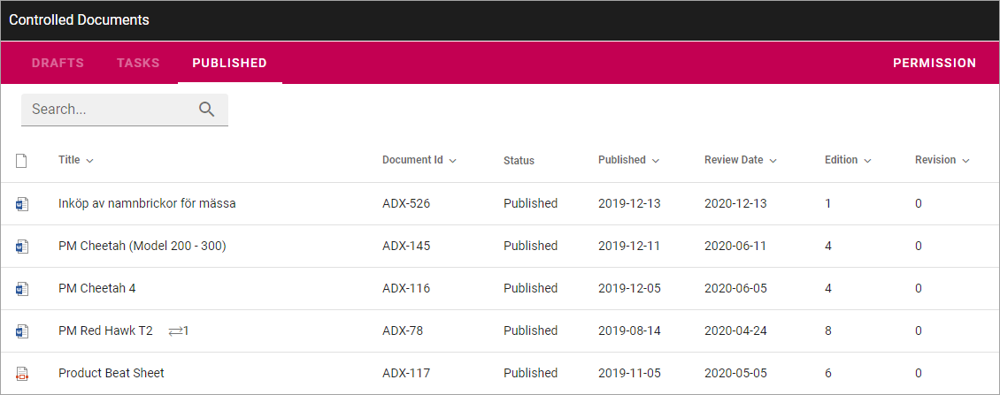

Authoring Controlled Documents¶
This section is for Authors of Controlled Documents. The work always take place in a Controlled Documents Library in a Team Site. Who is allowed to author and approve (if approval is needed) is set up in Omnia Admin under Document Management.
When a Team Site has been set up for Controlled Documents authoring, the following will be available for Controlled Document authors:
- A documents library (Controlled Documents) that only users defined in the author’s permission group can work with.
- A Send for Comments Workflow.
- A Publish Workflow.
- A Tasks list.
- Workflow History.
- Document History for drafts.
- Document History for the published editions.
- Options for relating to other documents.
- Options for relating to QMS Processes (if Omnia QMS is activated).
- Options for creating a new draft from a published document.
- Options for unpublishing a published document.
In a Team Site set up for Controlled Documents authoring, a library, usually called just “Controlled Documents”, is available here:

In the Controlled Documents library, authors can find three tabs:
“Drafts” is used when creating and editing drafts for new Controlled Documents or when updating an existing document for a new edition. Note that there are several options available for creating a new draft document, see below.
“Tasks” is a list of tasks for the documents – either for review or for publication – both active and finished.
When a document is published (approved for publication) it is removed from Drafts and is available on the “Published” tab. Here the options for creating a new draft, unpublishing and Document History are available, together with a number of additional options, see: Working with Published documents.
Most headings can be used to sort a list.
Select section for more information: